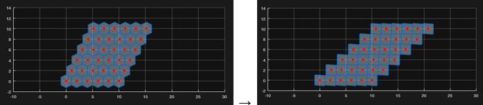
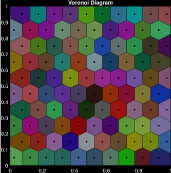
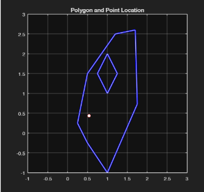
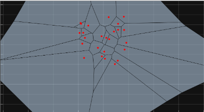

2026 · RESEARCH · PROGRAMMING · MATLAB · FEA
Mesh Generation with Voronoi Tessellation
Computational mesh-generation project using MATLAB, Voronoi tessellation, and half-edge data structures for finite element applications.

Overview
Developed computational geometry algorithms in MATLAB to generate and manipulate custom 2D meshes and dynamic lattice structures. Beginning with the point-in-polygon verification algorithms utilizing vector cross products and Jordan's curve theorem, the scope expanded to generating Voronoi shapes. To overcome infinite sized shapes, ghost point were made to establish closed and uniform polygon cells. This was then modified by using basis vectors and linear algebra principles to create 2D bravais lattices and Wigner-Seitz cells. Linear transformation was also animated while maintaining borders.
Voronoi Tessellation
Voronoi tessellation was used to generate geometric structures that could be processed into computational meshes.

Half-Edge Data Structure
A half-edge data structure was implemented to organize and analyze relationships between mesh vertices, edges, and faces.

Images
